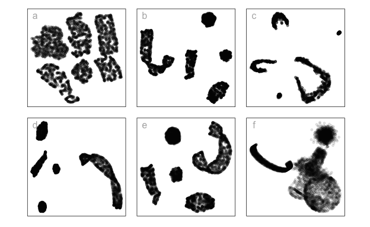

A high-dimensional dataset is where each observation is described by many features, or dimensions. Such a dataset might contain various types of structures that have complex geometric properties, such as nonlinear manifolds, clusters, or sparse distributions. We can generate data containing a variety of structures using mathematical functions and statistical distributions. Sampling from a multivariate normal distribution will generate data in an elliptical shape. Using a trigonometric function we can generate a spiral. A torus function can create a donut shape. High-dimensional data structures are useful for testing, validating, and improving algorithms used in dimensionality reduction, clustering, machine learning, and visualization. Their controlled complexity allows researchers to understand challenges posed in data analysis and helps to develop robust analytical methods across diverse scientific fields like bioinformatics, machine learning, and forensic science. Functions to generate a large variety of structures in high dimensions are organized into the R package cardinalR, along with some already generated examples.
Generating synthetic datasets with clearly defined geometric properties is essential for evaluating and benchmarking algorithms in various fields, such as machine learning, data mining, and computational biology. Researchers often need to generate data with specific dimensions, noise characteristics, and complex underlying structures to test the performance and robustness of their methods.
There are numerous packages available in R for generating synthetic data, each designed with unique characteristics and focus areas. For example, geozoo (Schloerke (2016)) offers a large collection of geometric objects, allowing users to create and analyze specific shapes, primarily in lower-dimensional spaces. Another useful package is snedata (Melville (2025)), which provides tools for generating simplified datasets useful for evaluating dimensionality reduction techniques like tSNE, often focusing on understanding and evaluating low-dimensional embeddings of complex data structures. Additionally, mlbench (Leisch and Dimitriadou (2024)) includes a collection of well-known benchmark datasets commonly associated with established classification or regression challenges. In the field of single-cell omics, splatter (Zappia et al. (2017)) is particularly simulate complex biological data, effectively capturing nuances such as batch effects and differential expression.
There is a valuable opportunity to improve the generation of high-dimensional data structures by integrating geometric principles with advanced noise control and customizable clustering. The geozoo package provides a strong foundation but could be enhanced to support high-dimensional extensions with controlled noise and user-defined parameters for clustering. Similarly, while snedata focuses on abstract datasets for dimensionality reduction, adding features for generating high-dimensional data from geometric layouts would enhance its usability. The mlbench package could also benefit from allowing users to create datasets with specific geometric structures and noise profiles. Additionally, although splatter specializes in biological data simulation, it could be expanded to offer a broader framework for generating diverse geometric structures across dimensions, enabling detailed control over noise and clustering. Addressing these areas could lead to more robust high-dimensional data generation tools.
To address this gap, this paper introduces the cardinalR R package. This package provides a collection of functions designed to generate customizable data structures in any number of dimensions, starting from basic geometric shapes. cardinalR offers important functionalities that extend beyond the capabilities of existing tools, allowing users to: (i) construct high-dimensional datasets based on geometric shapes, including the option to enhance dimensionality by adding controlled noise dimensions; (ii) introduce adjustable levels of background noise to these structures; and (iii) create complex clustered data arrangements by using fundamental geometric forms, while maintaining their positions, scales, orientations, and sample sizes in arbitrary dimensional spaces. By providing these integrated features, cardinalR aims to provide researchers to generate more explainable and challenging synthetic datasets focused to the specific needs of evaluating algorithms in high-dimensions. This bridges the gap between geometric foundations and the flexible generation of complex synthetic data.
The paper is organized as follows. In next section, introduces the implementation of cardinalR package on CRAN and GitHub, including demonstration of the package’s key functions. We illustrate how a clustering data structure affect the Non-linear dimension reductions in Example section. Finally, we give a brief conclusion of the paper and discuss potential opportunities for use of our data collection.
The package can be installed from CRAN using
install.packages("cardinalR")and the development version can be installed from GitHub
devtools::install_github("JayaniLakshika/cardinalR")More documentation of the package can be found at the web site https://jayanilakshika.github.io/cardinalR/.
The cardinalR package comes with several data sets that load with the package. These are described in Table 1.
| data | explanation |
|---|---|
| mobius_clust_data | |
| mobius_clust_tsne_param1 | |
| mobius_clust_tsne_param2 | |
| mobius_clust_tsne_param3 | |
| mobius_clust_umap_param1 | |
| mobius_clust_umap_param2 | |
| mobius_clust_umap_param3 |
Add main function argument list to a table…
| Function | Explanation |
|---|---|
| gen_expbranches | |
| gen_linearbranches | |
| gen_curvybranches | |
| gen_orglinearbranches | |
| gen_orgcurvybranches |
| Function | Explanation |
|---|---|
| gen_gridcube | |
| gen_unifcube | |
| gen_cubehole |
| Function | Explanation |
|---|---|
| gen_quadratic | |
| gen_cubic |
| Function | Explanation |
|---|---|
| gen_pyr | |
| gen_pyrrect | |
| gen_pyrtri | |
| gen_pyrstar | |
| gen_pyrholes |
| Function | Explanation |
|---|---|
| gen_scurve | |
| gen_scurvehole |
| Function | Explanation |
|---|---|
| gen_circle | |
| gen_curvycycle | |
| gen_unifsphere | |
| gen_gridedsphere | |
| gen_clusteredspheres |
To generalize the Swiss roll structure to arbitrary dimensions, we introduce a function generate_swiss_roll(n, p), which constructs a high-dimensional version of the classic 3D Swiss roll while preserving its core characteristics.
The function generates n points in a p-dimensional space, where the first two dimensions (X_1, X_2) define the primary Swiss roll shape using a parametric equation:
\[ X_1 = t \cos(t), \quad X_2 = t \sin(t), \quad \text{where } t \sim U(0, 3\pi) \]
The third dimension (X_3) introduces variation perpendicular to the roll, sampled uniformly from \([-1,1]\). Additional dimensions (X_4 to X_p) extend the data structure by applying a sinusoidal transformation of the parameter t, ensuring continuity in higher-dimensional spaces:
\[ X_i = \frac{\sin(i t)}{i}, \quad \text{for } i \geq 4. \]
This transformation ensures a gradual decay in variance across dimensions, mimicking real-world high-dimensional structures where later dimensions often capture subtler variations.
| Function | Explanation |
|---|---|
| gen_crescent | |
| gen_curvycylinder | |
| gen_sphericalspiral | |
| gen_helicalspiral | |
| gen_conicspiral | |
| gen_nonlinear |
Add table of odd shapes..
| Function | Explanation |
|---|---|
| gen_noisedims | |
| gen_bkgnoise | |
| randomize_rows | |
| gen_nproduct | |
| gen_nsum | |
| gen_wavydims1 | |
| gen_wavydims2 | |
| gen_wavydims3 | |
| gen_rotation | |
| normalize_data |
We illustrate the use of the package by generating five clusters of different shapes, positioned with equal inter-cluster distances in \(4\text{-}D\). Using this synthetic dataset, we will evaluate the performance of six popular dimensionality reduction techniques: Principal Component Analysis (PCA) (Jolliffe 2011), t-distributed stochastic neighbor embedding (tSNE) (Maaten and Hinton 2008), uniform manifold approximation and projection (UMAP) (McInnes et al. 2018), potential of heat-diffusion for affinity-based trajectory embedding (PHATE) algorithm (Moon et al. 2019), large-scale dimensionality reduction Using triplets (TriMAP) (Amid and Warmuth 2019), and pairwise controlled manifold approximation (PaCMAP) (Wang et al. 2021).

The code is available at https://github.com/JayaniLakshika/cardinalR, and source material for this paper is available at https://github.com/JayaniLakshika/paper-cardinalR.
This article is created using knitr (Xie 2015) and rmarkdown (Xie et al. 2018) in R with the rjtools::rjournal_article template.
Text and figures are licensed under Creative Commons Attribution CC BY 4.0. The figures that have been reused from other sources don't fall under this license and can be recognized by a note in their caption: "Figure from ...".
For attribution, please cite this work as
Gamage, et al., "cardinalR: Generating interesting high-dimensional data structures", The R Journal, 2025
BibTeX citation
@article{paper-cardinalR,
author = {Gamage, Jayani P. and Cook, Dianne and Harrison, Paul and Lydeamore, Michael and Talagala, Thiyanga S.},
title = {cardinalR: Generating interesting high-dimensional data structures},
journal = {The R Journal},
year = {2025},
issn = {2073-4859},
pages = {1}
}